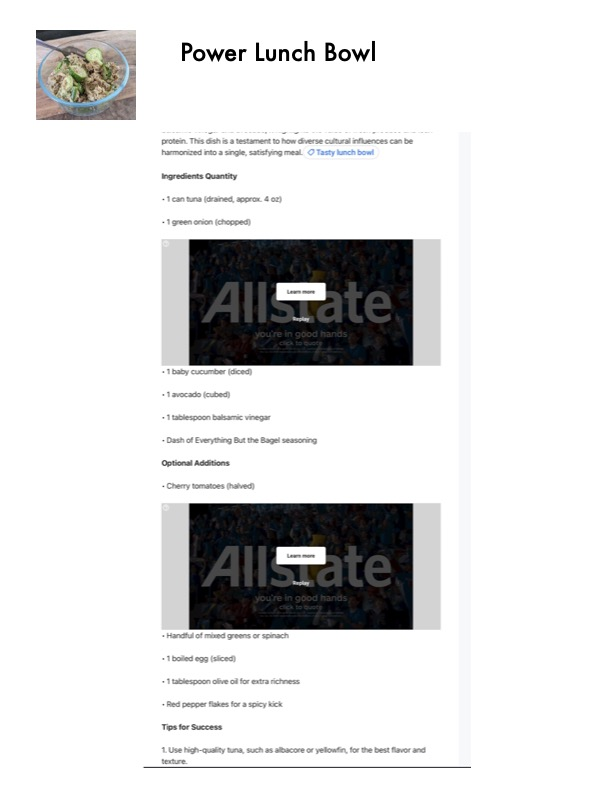

Power Lunch Bowl

Original cookbook page 750
A healthy, protein-packed lunch bowl with tuna, fresh vegetables, and avocado. Perfect for a quick, nutritious meal.
Prep: 10 minutes • Cook: 0 minutes • Total: 10 minutes
Ingredients
- 1 can tuna, drained (approx. 4 oz)
- 1 green onion, chopped
- 1 baby cucumber, diced
- 1 avocado, cubed
- 1 tablespoon balsamic vinegar
- Dash of Everything But the Bagel seasoning
- OPTIONAL ADDITIONS:
- Cherry tomatoes, halved
- Handful of mixed greens or spinach
- 1 boiled egg, sliced
- 1 tablespoon olive oil for extra richness
- Red pepper flakes for a spicy kick
Instructions
- Drain the tuna and place in a bowl.
- Add chopped green onion, diced cucumber, and cubed avocado.
- Drizzle with balsamic vinegar and sprinkle with Everything But the Bagel seasoning.
- Gently mix to combine all ingredients.
- Add any optional ingredients as desired (cherry tomatoes, mixed greens, boiled egg, olive oil, red pepper flakes).
- Serve immediately for best freshness.
Recipe #750 from collection